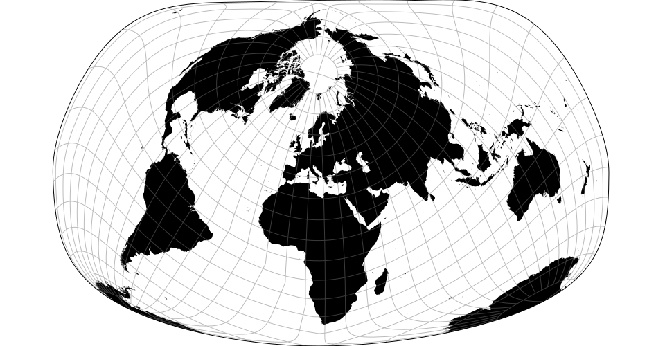
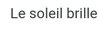
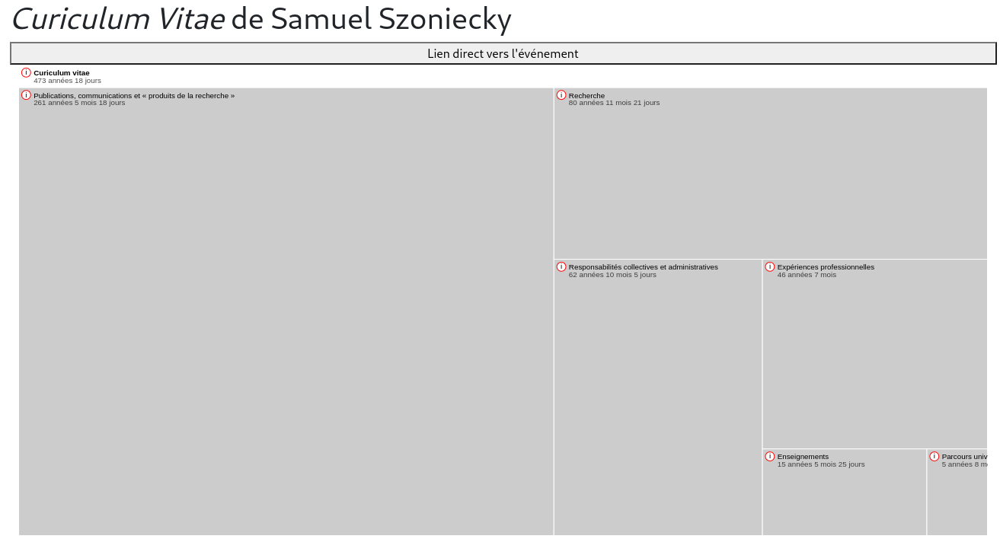

1 Principes de cartographie des connaissances
Les principes de cartographie des connaissances que nous utilisons s’appuient sur des idées inspirées de nombreuses références (cf. Positionnements) à partir desquels nous concevons un design des connaissances et définissons des propriétés graphiques. Il va de soi, que d’autres références définiraient d’autres designs et d’autres propriétés graphiques. Il serait particulièrement intéressant d’analyser en quoi tel ou tel auteur utilise dans ses œuvres des images mentales spécifiques qui en font un plasticien de la pensée. Il nous semble évident que les idées de Descartes et Spinoza n’ont pas la même plasticité, de même celles d’Heidegger et Bachelard ou de Wittgenstein et Deleuze. L’absolu plasticité du numérique permettrait sans doute de montrer ces idées suivant des modes de représentation propres à chacun de ces auteurs afin de les comparer ou des les utiliser pour un design de connaissance spécifique. Nous avons fait ce travail dans les lignes suivantes pour construire notre design des connaissance à partir d’idées dont la plasticités nous semble particulièrement fertile.
Le premier principe sur laquelle nous nous appuyons est celui que les connaissances se produisent suivant un cycle continu d’expériences dans le monde physique et dans le monde de la pensée. Entre les « physicalités » et les « intériorités » (Descola 2005), les « cycles de sémioses »(µ, Édeline, and Klinkenberg 2016) canalisent nos perceptions par « anasémiose » pour discerner des informations que nous communiquons par « catasémiose » en donnant forme à l’agir : parler, lire, écrire, gesticuler, ne rien faire…

Le second principe se base sur les travaux de (Hofstadter and Sander 2013) pour qui l’analogie est le « moteur » qui relie le discernement et l’action en gardant le souvenir de cette relation qui devient à force de répétition, une manière d’être en prenant chez Deleuze la forme d’un « pli » qui est notre troisième principe :
« L’opération de la perception constitue les plis dans l’âme, les plis dont la monade est tapissée du dedans ; mais ceux-ci ressemblent à une matière, qui doit dès lors s’organiser en replis extérieurs. » (Deleuze 1988, 131)
A la manière de deux miroirs qui plient la lumière en se reflétant l’un dans l’autre à l’infini, discernement et action se réfléchissent en pliant les flux d’information. Chaque pli décompose l’information en signes dont les signifiés plongent vers l’intériorité en stimulant l’intuition et dont les signifiants émergent vers des physicalités en stimulant l’expression.
Entre discerner et agir, intuition et expression, c’est dans ce « milieu » qu’Augustin Berque décrit une « pulsation existentielle » mue par la « raison trajective » que nous prenons comme quatrième principe :
« la raison trajective, elle est en effet dans la pulsation existentielle qui, par la technique, déploie notre corps en monde sur la terre, et qui simultanément, par le symbole, reploie le monde en notre chair » (Berque, 2009, p. 402)
Cette raison pilote la réflexion en modifiant l’inclinaison du pli vers le discernement de signifiés ou vers l’expression de signifiants. Elle procède de processus que nous contrôlons consciemment et d’autres plus imprévisibles et incontrôlables qui se produisent en fonction d’une multitudes de pliages et de leurs capacités à ce faire, ce défaire, ce bloquer suivant un cinquième principe celui du degrés de flexibilité (Clément, 2021).
Les cycles de sémioses, les analogies, les plis, les pulsations existentielles, les degrés de flexibilité structurent et produisent nos connaissances tout au long de nos vies en développant trois pouvoirs fondamentaux : discerner, raisonner, agir. Notre hypothèse principale est qu’il est possible de cartographier ces connaissances en représentant les pliages et leurs dynamismes dans trois directions : vers l’intériorité (discerner), en boucles récursives (raisonner) et vers l’extérieur (agir). À chaque pulsation existentielle, à chaque événement de nos vies, à chaque pli, ces pouvoirs augmentent ou diminuent accentuant ainsi des rapports privilégiés, d’autres, plus secrets, et même certains qui nous restent inconnus. Ainsi, la pulsation varie continuellement, elle est parfois instantanée par exemple quand on rit, elle peut aussi prendre beaucoup de temps quand un souvenir longtemps oublié émerge petit à petit ; elle devient un métier quand à force de pratiquer un geste particulier, celui-ci s’automatise. Ces pulsations se transforment parfois en bêtises ou en inconscience quand le pouvoir d’agir prend le pas sur les pouvoirs de discerner et de choisir en occultant leurs pliages potentiels. Suivant leurs fréquences, les pulsations existentielles forment des ondes dont la vitesse de propagation est fonction de leur longueur (distance séparant deux maxima consécutifs de l’amplitude entre physicalités et intériorité) et du milieu dans lequel elles se déploient. La catégorisation et l’analyse de ces ondes renvoient globalement à une réflexion sur la modélisation de l’esprit qui dépasse le cadre de ce propos.
Les chapitres suivants explicitent comment à partir de ces cinq principes et de cette hypothèse principale, nous cartographions dans le Web (1.1.1 Cartographier dans un environnement Web p. 14) des connaissances qui se développent dans l’espace et le temps (1.1.2 Représentations spatio-temporelles p. 20) suivant les pulsations existentielles d’un actant (1.1.5 L’actant comme générateur de rapports p. 33) entre des espaces matériels (1.1.3 Espaces matériels : connaissances des chocs p. 22) et conceptuels (1.1.4 Espaces conceptuels : connaissances des essences p. 26). Ces propositions sont le résultat d’un travail de recherche d’une dizaine d’années que nous présentons en détails dans le chapitre 2 Modéliser les connaissances à la limite du pays fertile p. 60.
1.0.1 Cartographier dans un environnement Web
Un environnement Web se base avant tout sur une architecture Client / Serveur qui utilise le protocole HTTP pour organiser les échanges de données entre des machines et des utilisateurs via un navigateur (Balpe et al., 1996) cf. ci-dessous1.

Nous ne ferons pas ici une analyse des technologiques de représentation des données (Andry et al., 2022; Fekete & Boy, 2015) préférant nous focaliser sur les outils et les méthodes que nous utilisons dans le cadre de ce travail pour cartographier nos connaissances. Nous ne détaillerons pas non plus tous les éléments qui composent notre environnement2 mais uniquement les plus pertinents pour comprendre les principes de cartographie que nous avons mis en place dans ce travail pour gérer les données du coté serveur et naviguer dans leurs représentations du coté client.
1.0.1.1 Gérer les données sur les serveurs
Les serveurs sont des machines qui fournissent des ressources via une requête spécifique sur une adresse unique dans un environnement Web. Le protocole HTTP définie les conditions d’adressage de ces requêtes et les éventuels paramètres qui lui sont associés. Il existe une multitude de solutions pour gérer les données à partir de ce protocole et des langages informatiques associés comme PHP, Python, Java... Pour nos travaux de recherche, nous avions fait le choix de développer sur nos serveurs, une boite à outils basée sur PHP et une base de données spécifique (Szoniecky, 2017, p. 141). Pour des questions de maintenance de l’environnement, de facilités de développement et de diffusion des données de la recherche, nous avons abandonné cette solution pour utiliser depuis quelques années l’environnement Web proposé par le CMS Omeka S3. Cette solution de gestion des archives numériques offrent les fonctionnalités nécessaires pour modéliser une base de données spécifique respectant les principes du Linked Open Data4 et les moyens de manipuler ces données avec des vocabulaires, des modèles de ressource, des modules et des thèmes spécifiques. Une fois maîtrisé les éléments de cet environnement, les données produites par les recherches deviennent accessibles, manipulables et interopérables5.
« En utilisant aujourd’hui un tableur ou une base de données ad hoc pour stocker les données, non seulement on se prive de toute la richesse sémantique des LOD et de leur potentiel de traitement, mais encore on risque de ne pas pouvoir réutiliser l’information collectée. La communauté de recherche va ainsi continuer à parcourir mille fois le premier kilomètre, alors qu’une démarche collaborative de collecte de l’information, soutenue par des plateformes de recherche fondées sur les technologies sémantiques, permet de parcourir ensemble des milliers de kilomètres et de disposer, en très peu de temps et en faisant levier sur une curation collective des données, d’un graphe d’information de grande complexité, qualité et richesse. » (Beretta, 2023 § 15)
Pour chaque projets de recherche et d’enseignement qui nécessitent de manipuler des données, nous avons développé des environnements Omeka S avec le cas échéant des modules et des thèmes spécifiques (cf.3.4.2Mise en pratique d’Omeka S p. 71). Plus particulièrement, pour ce travail d’HDR, nous avons rassemblé dans un environnement Omeka S les informations concernant notre curriculum vitae et la veille informationnelle que nous menons depuis plus de quinze ans (cf.1.2.1Processus de veille p. 38).
Pour ce faire, nous avons créé :
2 vocabulaires spécifiques :
- Jardin des connaissances : nous utilisons ce vocabulaire pour gérer la modélisation des existences informationnelles dans un écosystème de connaissances
- Formation Université Paris 8 : ce vocabulaire permet de modéliser l’architecture des enseignements dans l’enseignement supérieur
30 modèles de ressource pour décrire les objets de recherche par exemple :
- Évènement CV : utilisé pour décrire les événements d’un curriculum vitae
- JDC Actant : utilisé pour décrire un actant dans un écosystème de connaissances
4 modules spécifiques pour une gestion spécifique des données dans Omeka S:
- Diigo Import : ce module permet d’importer les signets enregistrés dans une base de données Diigo y compris les copies d’écrans6.
- Zotero Import Plus : ce module basé augmente le module Zotero Import pour importer les notes prises dans Zotero ainsi que les documents associés aux références bibliographiques7.
- JDC : ce module fourni les interfaces nécessaires pour modéliser un écosystème de connaissances suivant une ontologie éthique (1.5.2 Modèle pour une ontologie – éthique p. 51) 8.
- CartoAffect : ce module permet de gérer les données pour la modélisation et la présentation des affects en relation avec un écosystème de connaissances9.
Les données de cette environnement Omeka S ont été importées dans la base de données avec les modules d’importation Diigo Import, Zotero Import et Bulk Import10. Ce dernier module est très pratique pour importer des données à partir de tableurs. Nous avons constitués ces tableurs manuellement par exemple à partir de la version texte de notre CV11 ou automatiquement par exemple avec l’outil que nous avons développée pour extraire les informations des dépôts GitHub12 d’un compte :

Les données de l’écosystème de connaissance que nous avons développé pour ce travail représente une base de données SQL de 75 tables peuplées par plus de 2 000 000 de lignes. Le graphique ci-dessous présente la répartition des objets disponibles dans cet écosystème suivant leur classe13 :

Le graphique montre que les deux tiers des objets dans l’écosystème sont des annotations (61 120 = 60 %) qui créent un rapport entre un document, un actant et un concept. Nous retrouvons ici le 4 dimensions du modèle que nous utilisons pour modéliser les connaissances (1.5.2 Modèle pour une ontologie – éthique p. 51). Plus précisément, la dimension physique (documentaire) est composée essentiellement de pages Web (19 491 items = 19 %14), des citations (8 994 = 9 %), de médias (3 427 = 3 %), des notes (1 488 = 1 %) et des livres (568 = 1 %) issues de notre processus de veille. Les autres dimensions de l’écosystème sont les concepts (6 266 = 6 %) et les personnes (1 885 2 %) associées aux actants (500 = 0,5 %). Le graphique ci-dessous montre cette répartition des objets suivant les dimension existentielles :
 Cette représentation suivant la classe des objets sous estime la complexité de l’écosystème puisqu’elle ne prend pas en compte le détails des valeurs (dimension physique) de chaque propriété (dimension concept) ni l’actant qui exprime les rapports entre propriétés et valeurs. En d’autres termes, chaque objet de l’écosystème est une niche écologique particulière qui possède ça propre complexité qui s’ajoute à la complexité de l’ensemble. Cette complexité de l’objet est d’autant plus grande que la valeur d’une propriété est une ressource sous la forme d’une URI vers une page Web ou un lien vers un autre objet de l’écosystème est donc vers une nouvelle complexité qui elle aussi s’ajoute à la complexité globale. A partir des règles génériques pour calculer la complexité existentielle d’un écosystème (1.5.3 La complexité existentielle p. 51) la complexité de l’écosystème de connaissances pour ce travail est le suivant :
Cette représentation suivant la classe des objets sous estime la complexité de l’écosystème puisqu’elle ne prend pas en compte le détails des valeurs (dimension physique) de chaque propriété (dimension concept) ni l’actant qui exprime les rapports entre propriétés et valeurs. En d’autres termes, chaque objet de l’écosystème est une niche écologique particulière qui possède ça propre complexité qui s’ajoute à la complexité de l’ensemble. Cette complexité de l’objet est d’autant plus grande que la valeur d’une propriété est une ressource sous la forme d’une URI vers une page Web ou un lien vers un autre objet de l’écosystème est donc vers une nouvelle complexité qui elle aussi s’ajoute à la complexité globale. A partir des règles génériques pour calculer la complexité existentielle d’un écosystème (1.5.3 La complexité existentielle p. 51) la complexité de l’écosystème de connaissances pour ce travail est le suivant :
L’ensemble de ces données sont accessibles via l’API de Omeka S sous un format RDF-JSON utilisé pour l’interopérabilité entre les machines mais aussi via des représentations dédiées à la navigation à l’intérieur de cet écosystème.
1.0.1.2 Naviguer dans les représentations
La gestion des données sur les machines clientes disposant d’un navigateur Web comme Chrome ou Firefox passe par des représentations que les utilisateurs explorent suivant les principes hypertextuels. Celles-ci consistent à mettre en relation des données avec un système de coordonnées cartésiennes qui possèdent 2 dimensions ( p. ou 3 dimensions ( p. ) . Ces coordonnées définissent des points qui sont associés pour former des lignes et des plans et ainsi disposer d’un vocabulaire graphique élémentaire (Kandinsky, 1991). Toutefois, la réalisation de cartographie en 3 dimensions demande beaucoup de temps et des compétences dont nous ne disposons pas dans le contexte de ce travail (cf. 2.4.3 Représentation des pulsations existentielles en 3D p. 68). Pour les graphiques que nous présenterons, nous avons donc décidé de n’utiliser que le système de coordonnées planaires. Il nous faut donc définir comment utiliser les 2 dimensions (x, y) pour représenter les multiples propriétés de nos données. On peut envisager de nombreuses solutions mais toutes ne seront pas compréhensibles ni facilement manipulables suivant les données et les échelles auxquelles on souhaite les représenter. Nous choisissons donc de multiplier les environnements graphiques en deux dimensions et de les interconnecter les uns avec les autres afin de former un écosystème graphique présentant de manière optimale les multiples propriétés que les données possèdent.
 [](media [](media |
/10003C4200002F5F00002EF5D54C4825D5249FE4.svg){width=“4.761cm” height=“4.766cm”} |
| Illustration 6: Coordonnées cartésiennes : planaires15 | Illustration 7: Coordonnées cartésiennes tridimensionnelles16 |
Dans ce contexte d’écosystème graphique (Aït-Touati et al., 2019; Zreik, 2010), il est très important de disposer des moyens pour créer des graphiques à partir des données mais aussi de manière réciproque gérer les données à partir des graphiques en concevant des interactions riches entre les données, les graphiques et leurs utilisateurs afin d’effectuer les quatre actions fondamentales sur les données : Cread Read Update Delete (CRUD). Nous ne sommes pas dans une vision statique de la représentation des données comme pouvait l’être (Bertin, 1999) qui prenait comme principe que les graphiques devaient être imprimables. Ce qui compte aujourd’hui c’est la capacité qu’ont les systèmes de visualisation d’être manipulables pour créer les conditions d’une interprétation des données (Drucker et al., 2020) et l’expression d’une argumentation spécifique (Desfriches Doria, 2022).
C’est pourquoi nous avons choisi de travailler dans un environnement Web afin de créer dynamiquement des graphiques à partir d’un flux de données et surtout de rendre ces graphiques interactifs. L’autre choix important que nous avons fait est d’utiliser le langage graphique SVG17 qui permet de manipuler chaque composant graphique de manière autonome (Fry, 2008). Ainsi les points, les lignes et les plans disposent d’une autonomie en terme de propriétés graphiques, événementiels et informationnelles. Grâce à la librairie JavaScript D3.js18 (Data Driven Document) nous pouvons gérer ces propriétés en pilotant les graphiques à partir des données ou à l’inverse les données à partir des graphiques.
Dans cette environnement Web très ouvert et fertile, les possibilités de dynamisme et d’interaction entre les données, les graphiques et leurs utilisateurs sont potentiellement infinies. Il convient donc de spécifier plus précisément les choix que nous avons fait pour cartographier nos connaissances.
1.0.2 Représentations spatio-temporelles
Les premières informations à prendre en compte dans la cartographie des connaissances sont le temps et l’espace qui constituent une base fondamental de la recherche en sciences humaines : l’histoire et la géographie. Ce sont les données communes à toutes les analyses en sciences humaines : quand ? Où ?
1.0.2.1 Cartographier la géographie
Pour réfléchir sur ces informations les humains ont depuis longtemps développé des systèmes de représentations que ce soit pour le temps (Rosenberg & Grafton, 2013) (Domenget et al., 2017), l’espace (Béguin & Pumain, 2017) ou la combinaisons des deux (Serres, 1997) (Giacona et al., 2019) (Aït-Touati et al., 2019). Nous ne rentrerons pas ici dans l’analyse de ces représentations cela dépasserais de loin notre propos qui est de présenter nos principes cartographiques. Nous renvoyons le lecteur curieux à la veille que nous faisons depuis plus de dix ans sur cette question19.
Sur notre Terre, les données spatiales sont définis par trois propriétés : une latitude, une longitude et une altitude. Les représentations des données géographiques sont aujourd’hui grandement aidées par les outils qui rendent disponibles pour les concepteurs les fonctionnalités nécessaires à la manipulation des cartes. Le principe de représentation est commun à tous ces outils : x = longitude, y = latitude. Ce qui diffère c’est le type de projection utilisé pour représenter les données suivant un point de vue particulier qui mettra l’accent sur une dimension spatiale. Les exemple ci-dessous montrent comment suivant le type de projection les représentations se transforment :
Tableau 1: Exemple de projections géographiques: https://github.com/d3/d3-geo-projection
| Jacques Bertin’s 1953 [](media | /10000000000003C0000001F46900D5D2AB4D8E23.png){width=“5.667cm” height=“2.951cm”}Hammer retroazimuthal [](media/10000000 | 000003C0000001F47F8100241BAEED66.png){width=“5.667cm” height=“2.951cm”}Spherical Mercator |
Dans notre cas, pour concevoir des cartes géographique en deux dimensions nous utilisons des librairies JavaScript Open Source comme leaflet.js20 ou D3.js qui permettent de manipuler des données géographiques modéliser avec le format GeoJSON21. Voici par exemple la représentation géographique de mes collaborations dans le monde à partir de mes dépôts dans HAL22 (cf. 2.4.2 Représentation de l’activité des chercheurs p. 68) :

Cette carte montre les pays hors de la France où sont publiées mes textes scientifiques et les conférences auxquelles j’ai participées. Parallèlement aux données géographiques, la couleur des pays est proportionnelle au nombre de collaborations. Cette carte montre que mes collaborations se développent essentiellement avec des pays francophones et des pays de l’hémisphère nord.
1.0.2.2 Cartographier le temps
Pour les informations historiques, nous avons besoin de gérer deux propriétés, une date de début et une date de fin. Notons que la durée n’est pas une propriété nécessaire puisqu’elle se calcule à partir de la différence entre la date de début et la date de fin. Nous posons comme principe qu’une date de fin nulle indique une durée en cours. La frise est sans doute la représentation la plus courante et la plus commode à réaliser puisqu’elle associe une coordonnée graphique avec une échelle de temps, le plus souvent x pour une représentation horizontal et parfois y lorsqu’elle est verticale. Dans notre enfance, nous avons tous réalisé des frises historiques, elles peuplent nos salles de classe et prolifèrent sur le Web23. Nous avons une compréhension évidente de la frise historique, de son fonctionnement et des informations qu’elle diffuse : événements ponctuels, périodes. Voici par exemple la représentation en frise historique de mon activité d’enseignant chercheur :
 Cette frise historique24 montre l’évolution de mes activités d’enseignant chercheur suivant plusieurs type d’activité. Comme les outils Web de visualisation des cartes géographiques, cette visualisation fourni des fonctions de zoom, de déplacement et d’hypertextualité pour faciliter la lecture des données qui si elles sont trop détaillées, ne sont plus visibles. Là encore, la cartographie des connaissances dans le Web est conçu comme un outils de navigation dans les données.
Cette frise historique24 montre l’évolution de mes activités d’enseignant chercheur suivant plusieurs type d’activité. Comme les outils Web de visualisation des cartes géographiques, cette visualisation fourni des fonctions de zoom, de déplacement et d’hypertextualité pour faciliter la lecture des données qui si elles sont trop détaillées, ne sont plus visibles. Là encore, la cartographie des connaissances dans le Web est conçu comme un outils de navigation dans les données.
Les connaissances sont toujours en rapport avec l’espace et le temps mais nous posons comme hypothèse qu’entre les connaissances des physicalités et celles des intériorités, entre l’étendu et la pensée, l’espace et le temps n’ont pas les même modes de perceptions et d’expressions. Nous suivons sur ce point les principes spinozistes d’une modélisation ontologique corrélée à une éthique en définissant trois dimensions de l’existence corrélées avec trois genres de connaissance25 (1.5.2 Modèle pour une ontologie – éthique p. 51). Examinons maintenant comment nous définissons de nouveaux principes cartographiques à partir de ces propositions.
1.0.3 Espaces matériels : connaissances des chocs
A l’instar de (Bautier, 2016) nous pensons nécessaire « de prendre en compte la matérialité de la culture numérique ». Les technologies numériques véhiculent sans doute des idées de dématérialisation à travers des expériences de téléprésence, de virtualisation des échanges et d’autonomisation de la forme logique par rapport à la base matérielle. Mais peut-on encore parler de matière quand le contact avec l’événement se fait à travers des écrans, des réseaux, des milliers de kilomètres, des années, des algorithmes ?
Quoi qu’il en soit de cette « dématérialisation », nos connaissances numériques passent nécessairement par une dimension matérielle car nous sommes nous même constitué de matière :
« La sémiose, loin d’être un phénomène sans lien avec le corps, tire son origine de celui-ci. Ce premier aspect de la corporéité du sens peut être qualifié de cognitif : le signe émerge de l’expérience, et ne saurait être étudié qu’à travers les interactions qu’il a avec son contexte » (µ et al., 2016, p. 2)
Les illusions que le numérique procure, tendent pour beaucoup à nous faire croire à la dématérialisation en simulant par exemple des univers immersifs où nous vivons d’autres actualités que celles de notre corps avec des avatars de toutes sortes (Amato & Perény, 2013). Mais en dernière instance nous sommes matière et nous évoluons dans des espaces matériels. Sur ce point nous nous opposons au spiritualistes qui affirment « qu’il existe une substance spirituelle (l’âme ou l’esprit), indépendante de la matière, et qui serait, en l’homme, principe de vie ou d’action. » (Comte-Sponville, 1998, § 12).
Les interprétations par Deleuze de L’Étique de Spinoza décrive ces espaces matériels comme étant la première dimension de l’existence celle des « parties extensives » :
« Ces parties (corpora simplissima) [...] se définissent uniquement par leur déterminisme extérieur, et vont toujours par infinités ; [...] elles constituent la matière modale infiniment variée de l’existence.” (Deleuze, 2003, p. 110)
Entre l’infiniment grand et l’infiniment petit (cf. illustration ci dessous) les parties extensives sont observables et modélisables à toutes les échelles physiques de notre univers. Tout comme le choix d’une projection géographique reflète un point de vue particulier, celui des échelles de représentation contribue lui aussi à l’expression d’une subjectivité spécifique.


Les parties extensives correspondent aux « physicalités » des milieux que nous habitons, elles en sont l’indispensable matérialité. Cette nécessité de la matière est corrélé à des connaissances, elles aussi nécessaires, celles du premier genre de connaissance : les idées inadéquates :
« L’idée inadéquate, c’est l’idée inexpressive et non expliquée : l’impression qui n’est pas encore expression, l’indication qui n’est pas encore explication. » (Deleuze, 1968, p. 136)
Pour expliquer à quoi correspondent les connaissances du premier genre, Deleuze décrit dans un de ces cours l’expérience d’une personne au bord de la mer :
« Bien alors c’est quoi la connaissance du premier genre ? Eh bien allez, j’y vais, je me lance, je suis dans le premier genre de connaissance. Je me lance, je barbote, comme on dit. Qu’est-ce que ça veut dire barboter ? Barboter c’est tout simple, ça indique bien, on voit bien que c’est des rapports extrinsèques. Tantôt la vague me gifle, et tantôt elle m’emporte. Ça c’est des effets de choc. C’est des effets de choc, à savoir, je ne connais rien aux rapports qui se composent ou qui se décomposent, je reçois les effets de parties extrinsèques. Les parties qui m’appartiennent à moi, sont secouées, reçoivent un effet de choc des parties qui appartiennent à la vague. » (Deleuze, 1981b)
Donnons un autre exemple de ce premier genre de connaissance en vous invitant à faire l’expérience des parties extensives suivantes :

Sauf si vous connaissez le tamoul, le texte ci-dessous est pour vous comme un choc, vous ne connaissez rien des rapports qui se composent ou se décomposent, vous ne voyez que les parties extensives du texte. Pour être plus précis, vous pouvez tout de même discerner des rapports puisque vous savez que l’image est un texte composé de caractères qui composent des mots séparés par des espaces. Par contre, vous n’avez aucune idée des concepts présents dans le texte, vous avez connaissance des signifiants mais pas des signifiés26. D’une certaine manière vous êtes comme un OCR (optical character recognition) capable de reconnaître des caractères et des mots dans une image. Mais à l’inverse d’une machine numérique qui avant la reconnaissance du texte décompose l’image en une multitude de points ayant chacun leurs coordonnées cartésiennes et leurs propriétés de couleur, vous commencez par reconnaître le texte puis vous le décomposez en mots et en caractères. Cette différence entre la machine et l’humain dans le processus de connaissances est au cœur d’une problématique fondamentale de la gestion mécanique du sens :
« il y a un conflit entre l’holisme du sens et le mécanisme de la syntaxe. Le sens d’un texte dépend de son contexte, le sens d’un paragraphe dépend aussi du texte dans lequel il s’intègre, le sens d’un mot du paragraphe qui le contient, etc. : le sens va du global au local, de la compréhension globale vers l’analyse. Or, le formalisme opère de manière inverse : le sens d’une formule logique se construit à partir du sens de ses parties, allant du local au global. » (Bachimont et al., 2011, § 11)
Ce conflit est d’autant plus flagrant quand le même texte est présenté dans une écriture que vous connaissez ( p. ). Dans ce cas, vous ne faites plus la décomposition du texte en parties extensives le constituant mais vous accédez directement à sa signification car vous avez appris à lire, c’est-à-dire à discerner les compositions de rapports dans les parties extensives et vous accédez ainsi à un autre genre de connaissance celui des signifiants.
Notre principe de cartographie des espaces matériels consiste à les considérer uniquement en tant que physicalités composées de parties extensives modélisables par leurs propriétés physico-chimique : largeur, hauteur, profondeur, masse, couleur, atome, molécule… Par exemple, dans les espaces matériels un livre est considéré de part sa taille, son nombre de page, son poids, sa matière etc… Dans l’espace matériel, on ne prend pas en compte l’auteur ou la thématique du livre qui respectivement seront cartographiés comme actant (1.1.5 L’actant comme générateur de rapports p. 33) et comme élément d’un espace conceptuel (1.1.4 Espaces conceptuels : connaissances des essences p. 26). Dans les espaces matériels les mots du livre sont des traces de couleur qui génère des connaissances de l’ordre des chocs c’est à dire une réaction entre deux parties extensives celle de la trace et celles de nos capteurs biologiques ou artificiels. Notons que ces chocs en entraînent d’autres qui eu mêmes se propagent dans un phénomène d’accroissement de l’entropie constitutif de l’univers chaotique du premier genre de connaissances, celui des idées inadéquates qui se répandent sans fin par composition et décomposition :
« qu’est-ce que vous racontez là, mais alors cette nature, c’est un pur chaos ! Pourquoi c’est un pur chaos ? Parce que vous remarquerez que, chaque fois qu’un corps agit sur un autre, il y a toujours composition et décomposition à la fois. Ce n’est pas à ce niveau-là que je pourrais dire, il y a du bon et du mauvais. Pourquoi ? Parce qu’il y a forcément composition et décomposition, les deux l’un dans l’autre. » (Deleuze, 1981a)
Ces compositions et décompositions des corps les plus simples que sont les parties extensives sont modélisables suivant une hiérarchie de parties et de sous-parties. Par exemple le livre est décomposable en parties plus petites : page → paragraphe → phrase → mot → caractère. Ce même livre est aussi composable avec d’autres parties plus vastes : étagère → salle → bibliothèque. La modélisation des espaces matériels est une structure hiérarchiques qui potentiellement se compose jusqu’aux limites de l’univers observable ( p. ) et se décompose jusqu’à l’infiniment petit de l’échelle de Plank ( p. ) en passant par l’échelle de l’être humain ( p. ). Nous verrons plus loin combien le choix de l’échelle cartographique est primordial (1.1.6 De l’illusion d’une exhaustivité : vers une cartographie des subjectivités p.34)
 Pour cartographier les espaces matériels en tant qu’ensemble des parties extensives définissables par leurs propriétés physico-chimique et leurs compositions vers l’infiniment grand et décompositions vers l’infiniment petit, nous optons pour un modèle de diagramme hiérarchique appelé « treemap » et proposé par (Shneiderman, 1998) qui se compose de rectangles imbriqués représentant un élément et ses sous parties et dont la taille des rectangles est proportionnelle à la valeur numérique d’une propriété, par exemple le nombre d’éléments que contient la sous partie .
Pour cartographier les espaces matériels en tant qu’ensemble des parties extensives définissables par leurs propriétés physico-chimique et leurs compositions vers l’infiniment grand et décompositions vers l’infiniment petit, nous optons pour un modèle de diagramme hiérarchique appelé « treemap » et proposé par (Shneiderman, 1998) qui se compose de rectangles imbriqués représentant un élément et ses sous parties et dont la taille des rectangles est proportionnelle à la valeur numérique d’une propriété, par exemple le nombre d’éléments que contient la sous partie .
En utilisant l’objet TreeMap27 de la librairie D3.js, nous avons implémenté ce modèle de diagramme dans un module JavaScript (3.4.2.2.4.2.1 JDC Physiques p. 72 ) pour le rendre dynamique, interactif et ainsi représenter les espaces matériels que nous cartographions soit à partir de données existantes soit en les créant au fur et à mesure de l’exploration. Notons que pour faciliter la visualisation des dimensions physiques complexes, nous avons implémenté une navigation directe vers une partie ou une sous-partie et une navigation hiérarchique par zoom dans une partie et dé-zoom vers le parent. Par exemple, nous avons cartographié notre CV en utilisant ce modèle de diagramme avec comme paramètre de taille des rectangles la durée d’un événement :
Dans le cas de ce diagramme, la durée d’un événement cumule l’ensemble des durées des événements qui le compose ce qui explique une durée de plusieurs centaines d’année pour le CV. D’autre part, cette durée exprime une période de travail et ne prend pas en compte les activités parallèles à l’inverse de la frise historique ( p. ).
Dans les espaces matériels les connaissances sont des chocs qui ne dure qu’un instant, celui du contact entre les parties extensives. On peut les dater plus ou moins précisément, ils peuvent se répéter encore et encore mais ils n’ont pas de durée. Ce qui dure c’est l’onde du choc qui se propage dans les physicalités et dans les intériorités des acteurs qui participent à l’événement ce qui génère d’autres chocs dans les espaces matériels et des connaissances d’un autre genre dans les espaces conceptuels.
1.0.4 Espaces conceptuels : connaissances des essences
A l’opposé des espaces matériels-physiques et de la connaissance des chocs, nos connaissances se composent aussi dans nos intériorités :
« Par le terme vague d’ “intériorité”, il faut entendre une gamme de propriétés reconnues par tous les humains et recouvrant en partie ce que nous appelons d’ordinaire l’esprit, l’âme ou la conscience - intentionnalité, subjectivité, réflexivité, affect, aptitude à signifier ou à rêver. » (Descola, 2005, p. 168)
Comment cartographier ces espaces de connaissances ? Comment mesurer ces espaces ? Combien pèse une âme ?

La question du poids des âmes se pose depuis longtemps comme en témoigne l’iconographie de la pesée des âmes. La psychostasie, nom donné à cette activité de la pesée des âmes, touche historiquement les domaines de la théologie, de la philosophie et de l’éthique mais intéresse aussi les sciences de l’information et de la communication qui cherchent notamment des réponses sur la mesure, l’analyse et la critique de ces espaces informationnels immatériels qui ne sont pas mesurables de la même manière qu’une planche de bois ou qu’une récolte de fruit car ils ne sont pas soumis aux règles physiques de la matérialité tant qu’ils ne sont pas exprimées. Dès le passage de ces espaces intérieurs vers une forme d’expression quelle qu’elle soit (écrit, parole, clic sur un bouton...), ils se transforment en physicalités dont on pourra mesurer les paramètres physiques (hauteur, largeur, vitesse…). Ne peut-on mesurer ces intériorités qu’une fois exprimées par nos paroles, nos écrits, nos dessins, nos danses, nos activités corporelles… ?
Il faut sans doute passer par une forme d’expression pour que les impressions dans nos intériorités soient communicables, même s’il existe des connaissances intérieures qui restent secrètes, non par choix de ne pas les exprimer mais par impossibilité de le faire soit parce qu’elles sont inconscientes, soit parce qu’elles relèvent d’une expérience incommunicable. Sans parler des connaissances mystiques qui n’existent que par le fait de les avoirs expérimenter ou non, pensons simplement aux connaissances qui émergent de nos intériorités à la lecture dans simple mot : aimer. Chacun d’entre nous expérimente la lecture de ce mot suivant ses propres histoires, ses états actuels et ses désirs ; ce que nous en communiquerons révélera ou non une partie de ces expériences que le mot aura fait résonner en nous. Nos intériorités sont le siège de nos subjectivités et des processus de signification que nous avons abordé en introduction de ce chapitre. Elles sont l’espace des élaborations sémiotiques qui transforment notre pouvoir de discernement en pouvoir d’agir. Mesurer les espaces conceptuels et avant tout un travail de réflexivité individuelle et de concentration sur cette dimension particulière de l’existence que nous ne pouvons explorer que dans la solitude de notre propre conscience. L’enjeu qui nous anime ici est de fournir aux explorateurs de ces espaces conceptuels des outils pour cartographier leurs explorations de manière à les rendre interopérable avec celles menées par d’autres.
1.0.4.1 Approches topologique de la cartographie des concepts
Dans le domaine des sciences cognitives, les espaces intérieurs ont été pensé par (Gärdenfors, 2001) comme des « espaces conceptuels » en complémentarité des approches symboliques qui modélisent les systèmes cognitifs avec des machines de Turing et des approches connexionnistes qui modélisent avec des réseaux de neurones artificiels. Cet auteur propose de modéliser les espaces conceptuels à partir d’une représentation topologique des similarités qualitatives. La modélisation des espaces conceptuels par des topologies est sans doute une perspective intéressante pour représenter ces espaces car elle permet de concevoir des espaces métriques à partir de la notion simple de voisinage. On peut considérer les concepts comme des points qui définissent un espace dans leurs rapports de voisinage avec d’autre concepts et calculer des distances entre ces points. Toute la difficulté est de définir les valeurs qui seront utilisées pour calculer la distance entre ces points. Gärdenfors propose d’utiliser des valeurs qualitatives pour calculer les distances par exemple les concepts de couleurs seront représentés dans une topologie dont les distances sont calculées suivants les qualités de nuance, d’intensité et de luminosité. L’avantage de cette proposition est de rendre pratiquement objectif la distance entre les concepts car celles-ci résultent d’une mesure physique. Mais de notre point vue, ces qualités font parties de la dimension matérielle que nous avons présentée plus haut (1.1.3Espaces matériels : connaissances des chocs p. 22), elles ne peuvent donc pas être utilisées pour modéliser les concepts qui dans notre modèle relève d’une autre dimension existentielle, celle des essences (1.5.2 Modèle pour une ontologie – éthique p. 51). Il est fondamental de préserver la multiplicité des points de vue à l’intérieur de ces espaces conceptuels et de ne pas les réduire à une mesure physique qui est la même pour tous, à tout moment, en tout lieu. Nous pensons que les espaces conceptuels sont propres à chaque individu; leur cartographie ne peut donc pas relever d’une mesure « universelle » liée à une métrologie physique. La distance qui sépare « aimer » de « haïr » n’est pas la même pour vous ou moi, pour hier, aujourd’hui et demain, ou suivant le lieu de mes rapports avec ces concepts. Nous verrons plus loin comment les dimensions existentielles des actants et des rapports nous permettent de cartographier ces fluctuations temporelles et spatiales (1.1.5L’actant comme générateur de rapports p. 33) retenons juste pour le moment que les principes de cartographie des espaces conceptuels ne peuvent se baser sur une mesure matérielle car nous ne recherchons pas une mesure objective mais tout au contraire, l’expression d’une subjectivité.
Contrairement à Gärdenfors, le langage IEML propose un « filet topologique » (Lévy, 2011, p. 257) dont les espaces métriques sont purement conceptuels puisque les rapports de voisinage sont définies suivant six concepts (être, signe, chose, actuel, virtuel, vide) associés à trois positions conceptuelles (substance, attribut, mode) sur six couches. Il en résulte un grille topologique très vaste : (6*6*6)6 soit 1,015599567×10¹⁴ positions possibles. Une infime partie de ces positions (341828) ont été interprétées, classifiées et référencées par Pierre Lévy et ses équipes pour donner du sens à cette topologie et fournir un vocabulaire de base utilisable avec un éditeur dédié à ce langage29. Cette solution de cartographie des espaces conceptuels est élégante et très ambitieuse mais elle se confronte à plusieurs difficultés majeures. La première est qu’il n’est pas très facile de comprendre la complexité de ce langage et son utilité par rapport à des outils comme le moteur de recherche Google dont l’usage simplissime demande un effort minimal. IEML s’adresse à un public de spécialistes ayant des besoins très spécifiques et demande un investissement conséquent :
« IEML […] force à faire un travail d’analyse et de définition des concepts utilisés et fait apparaître de possibles paralogismes dans un raisonnement. » (Vitali Rosati, 2021).
La deuxième difficulté porte sur l’usage de ce langage qui ne correspond pas aux habitudes du public de chercheurs auquel il est destiné. Ceux-ci travaillent généralement des textes dans lesquels la définition et la critique des concepts est une part importante mais le référencement de ces concepts par des thésaurus, des vocabulaires normalisés ou des langages formels est considéré comme un travail à la charge des documentalistes, des bibliothécaires ou des « ingénieurs sémantiques », nouveau métier que Pierre Lévy contribue à faire émerger. Le passage par un tiers en charge de traduire un texte écrit en langage naturel dans un langage sémantique comme IEML occasionne une nouvelle difficulté liée à l’économie du processus éditorial qui est déjà soumis à de forte pressions temporelles, financières et humaines. Une autre difficulté que nous avons expérimentée dans notre usage d’IEML depuis une dizaine d’années, est le manque de pérennité des outils mis à disposition pour gérer ce langage30. Cette difficulté inhérente à un travail de recherche « in progress » mais plus généralement aux langages informatiques qui évoluent au fil de temps rend délicat l’investissement important et constant que nécessite l’utilisation d’IEML Au final, ce magnifique projet mené par Pierre Lévy rejoint sans doute la liste des langues parfaites (Eco, 1994) et contribue en tout cas à faire avancer l’utopie d’un dialogue plus fécond entre les humains grâce aux machines.
1.0.4.2 Modélisations prétopologiques des concepts
Face à ces difficultés, nous proposons de concevoir la cartographie des espaces sémantiques à partir d’outils simples permettant à chacun de construire ses propres représentations conceptuelles et donc de maîtriser le sens de ces représentations. Pour ce faire, nous avons élaboré un outil de conception de cartes sémantiques qui s’appuie sur le principes de la prétopologie (Belmandt, 1993) (Thibault, 2017) (Levorato, 2008) (Toumia, 2018) pour manipuler des concepts et leurs relations.
Les espaces conceptuels se prêtent particulièrement bien à la modélisation prétopologique car il correspondent à ces deux principes fondamentaux :
« pretopology can be used to represent a system where the relation between an element and a set is not a simple aggregation of the individual relations to the members of the set. In this it is fundamentally different from a graph.
pretopology establishes one single relation between a particular element and a particular group. In this it is different from a multilayer network. » (Laborde, 2019, p. 28)
Nos principes cartographiques utilisent les notions de base de la prétopologie pour guider l’utilisateur dans la construction d’une carte et pas uniquement pour représenter les résultats d’une analyse automatique comme peuvent le faire par exemple les outils de modélisation de graphes comme Gephi (Bastian et al., 2009). L’idée principale de cette démarche est de construire pas à pas des espaces conceptuels relativement simples avec un protocole de formalisation les rendant compréhensibles, interopérables et calculables. Les choix nécessaires à la construction de la carte sont ceux du cartographe et pas ceux d’un algorithme qu’on bricole en jouant avec ses paramètres pour obtenir la représentation désirée. Avec l’outil que nous proposons, le cartographe maîtrise la signification de ces choix ce qui n’est pas toujours le cas quand on applique un algorithme sur une grande quantité de données. L’objectif est d’éviter que la carte serve uniquement d’illustration justifiant un discours par un « preuve » graphique mais soit le discours à part entière.
Le processus de cartographie que nous proposons à partir d’une modélisation prétopologique consiste à définir un espace conceptuel en lui donnant un titre. Cet espace est représenté par une ellipse et par son titre. Dans un deuxième temps, cet espace est peuplé d’un ensemble d’éléments appartenant à l’espace. Par exemple, l’espace conceptuel que nous cartographions porte le titre de « humanités numériques », il se compose des éléments : humains, machines, collaboration, efficace, biais, cognitifs…
Dans un troisième temps, la modélisation prétopologique consiste à créer un ensemble de parties P(X) qui sont des sous-ensembles constitués avec une application d’adhérence qui s’applique aux éléments de l’ensemble.
« On appelle prétopologie sur X, toute application adh de P(X) dans P(X) qui vérifie :
i - adh (ø) = ø
ii - ∀A ∈ P(X), A ⊂ adh(A)
(X, adh) est appelé espace prétopologique.
adh est encore appelée adhérence. » (Dalud-Vincent, 2017, p. 47)
Dans notre cas, l’application d’adhérence consiste à « conceptualiser » les chaînes de caractères continues pour modéliser des sous-ensemble sous forme de mots : P(X) = [« humains », « machines », « collaboration », « efficace », « biais », « cognitifs »]. Ces mots sont eux-aussi représentés par une ellipse et par un titre ce qui de manière fractale fait que chaque élément de l’ensemble est lui-même un ensemble disposant de propriétés et de méthodes utiles pour sa manipulation cartographique. De même, l’espace conceptuel « humanités numériques » peut-être utiliser comment élément d’un ensemble plus vaste par exemple « sciences humaines ».
1.0.4.3 Applications prétopologiques des concepts
Pour faciliter les manipulations de concepts nous mettons à disposition des cartographes un espace dynamique et interactif dans lequel ils pourront utiliser graphiquement les applications prétopologiques pour : créer un espace, le définir, créer des sous ensembles et le mettre en relation avec d’autres espaces suivant des applications prétopologiques spécifiques.
Pour des raisons d’ergonomie graphique et algorithmique, les espaces conceptuels sont structurés par une grille hexagonale :
« L’hexagone permet de “paver” l’espace en un agencement sans fin, qui, potentiellement, permet de dessiner des réseaux infinis. […] Choisir une grille hexagonale réduit le bruit numérique et facilite la lecture. » (Rodighiero, 2021, p. 76)
Nous nous sommes inspiré des travaux d’Amit Patel31 pour mettre en place une grille hexagonale et les fonctionnalités nécessaires pour les applications prétopologiques que nous avons codé dans une librairie JavaScript32 et mis en application dans un module Omeka S (3.4.2.2.4 CartoAffect p. 72) afin de gérer les manipulations d’informations dans une base de données.
La première applications d’adhérence que nous venons de présenter, consiste à « conceptualiser » un espace en lui donnant un titre. Il suffit de cliquer dans l’espace conceptuel pour choisir une position et faire apparaître un formulaire permettant de saisir le titre du concept. Il est important de pouvoir créer tous les concepts possibles à partir de n’importe qu’elle chaîne de caractères car une des difficultés bien connues dans l’usage des ontologies ou des vocabulaires formalisés est de trouver la « bonne » référence dans un ensemble souvent très vaste dont on ne connaît pas l’ensemble des références et surtout quand on ne trouve pas d’équivalent à ses propres habitudes linguistiques. C’est pourquoi, dans nos principes de cartographie des espaces conceptuels, l’expression des concepts est libre comme c’est le cas dans les folksonomies (Broudoux et al., 2012). Toutefois, lors de la saisie du titre du concept, un processus d’auto-complétion du champ de saisie renvoie les concepts déjà enregistrée dans la base de données à partir de quelques lettres ; l’utilisateur est informé des concepts existants et peut donc choisir une référence déjà existante.
L’application « conceptualiser » enregistre dans une base de données la position d’un concept défini par un actant ici et maintenant dans un espace conceptuel de référence en décomposant ces informations dans les propriétés suivantes :
- identifiant de la position
- titre de la position
- identifiant de l’espace de référence
- coordonnées de la position dans l’espace de référence
- identifiant de l’actant
- date du choix de la position
- lieu du choix de la position
Décomposer l’actant, le concept et sa position a pour avantage de partager un concept commun à d’autres utilisateurs tout en conservant le point de vue de l’actant sur ce concept. Ainsi, « aimer » et « haïr » peuvent être commun à plusieurs personnes mais la distance entre ces deux concepts peut varier suivant les individus, le temps, l’espace… Il y a donc une dé-corrélation entre le concept et ses usages. Le concept est virtuel, c’est une potentialité qui s’actualise dans une « action située » c’est à dire dans des usages ayant leurs propres spécificités (2.2.3 Action située p. 62).
Cette définition minimale de l’espace prétopologique peut être enrichie par d’autres applications qui enrichissent l’espace de nouvelles propriété comme celui qui est à l’œuvre avec IEML. Cette activité purement conceptuelle consiste à affiner la cartographie en définissant des rapports entre les concepts à la manière de ce qui se fait lorsqu’on développe une ontologie (Bachimont, 2007) en utilisant par exemple des propriétés de relation issu du vocabulaire SKOS (Isaac, 2011).
Dans notre cas, l’application « intérieur » va nous permettre de définir les espaces conceptuels à l’intérieur d’autres espaces conceptuels en suivant la définition :
« Soit une application i : P(E) → P(E) appelée intérieur et définie comme suit :
∀A, A ⊆ E l’intérieur de A, i(A) ⊆ E est telle que :
– i(A) = [a(Ac)]c (P1)
– i(A) ⊆ A (P2)
avec Ac le complémentaire de A soit E − A. » (Levorato, 2008, p. 40)
Pour positionner les ellipses les unes par rapports aux autres de manière à faciliter leur lecture, nous avons faisons confiance aux utilisateurs.
TODO :mettre diagramme
Cette grille hexagonale de vingt-quatre
Une deuxième fonction Les éléments conceptuels sont dès lors représenté par leur titre au centre d’une ellipse englobant et dont le rayon correspond à la valeur de la fonction « étendu » qui par défaut prend la valeur de 1.
sodéfinies ultérieurement en utilisant le langage SKOS et en faisant référence à des ontologies ou des langages d’adressage comme IEML
De plus, la visualisation des étapes de construction de la carte rend accessible la logique de son auteur que l’on peut suivre pour comprendre des logiques de construction de plus en plus complexe.
plus simple de construction de la carte pour pour construire cart Si l’on en croit la définition de l’abstraction par Deleuze : «
Pour cartographier ces espaces intérieurs, nous proposons de les modéliser en utilisant
Du mot vers le concept…
De la carte vers la requête...
Impossible de mesurer une qu’on ne peut pas mesurer
“La durée se dit en fonction des parties extensives et se mesure au temps pendant lequel ces parties appartiennent à l’essence. Mais l’essence en elle-même à une réalité ou une existence éternelle ; elle n’a pas de durée, ni de temps qui marque l’achèvement de cette durée” (Deleuze, 1968, p. 291)
: le souvenir de la rencontre, temps et l’espace. J’ai fait le choix de sélectionner plusieurs espaces temps qui ont été particulièrement important au cours de mon évolution intellectuelle :
- le département
que nous avons opéré que que j’ai croisées et dont les discussions qui m’ont apporté :
- une liste des ouvrages de ma bibliothèque
- une liste des textes consultés
- liste des musiques
- liste des films
La perte des mémoires au profit du flux…
Définir les frontières :
“La frontière est donc, en fait, doublement, une zone d’empiétement : par son caractère d’objet fractal et la relativisation de sa topologie propre à l’échelle de représentation choisie ; par les luttes qui la traversent et, parfois, en déplacent le tracé.” § 15 Parrochia, D., 1993. Conclusion - Vers un réseau de réseaux ?, in: Philosophie des réseaux. Presses Universitaires de France, pp. 265–286.
1.0.5 L’actant comme générateur de rapports
Pour faciliter le positionnement des concepts les uns par rapport aux autres en évitant le chevauchement des titres, nous avons fait le choix d’utiliser une grille hexagonale comme le propose (Rodighiero, 2021, p. 76) pour réaliser la carte des affinités d’un laboratoire de recherche ou comme nous l’avons expérimenté pour paramétrer le filtrage des flux d’informations (Szoniecky, 2011). Une grille hexagonale permet de représenter les relations d’un élément avec vingt-quatre autres sans aucun chevauchement, ce qui peut paraître faible lorsqu’on pense à l’infinité des relations possibles entre les concepts mais qui offre l’avantage de contraindre la cartographie sémantique dans un espace relativement simple et donc facilement compréhensible. De plus, la construction fractale des rapports entre ensembles et éléments rend infini la possibilité d’expression puisque le regroupement des élément dans un ensemble crée la possibilité de représenter vingt-quatre nouveaux éléments.
En d’autres termes, nous reprenons ici les principes que recommande le W3C avec le format « Open Annotation »33 qui code de façon très simple les relations entre des ressources sémantiques afin de définir un point de vue particulier sur celles-ci. Pour gérer, ces informations dans la base de données nous avons utilisé le module Omeka S développé par Daniel Berthereau34.

1.0.6 De l’illusion d’une exhaustivité : vers une cartographie des subjectivités
Le choix de l’échelle : du global au local
Le présent du point de vue
1.0.7 De la confiance dans les données : vers une cartographie des affects
Les hypothèses cartographiques que nous venons de poser, précise notre modèle de description et de représentation des connaissances à partir duquel nous produisons une foule de données qui, en référence aux principes basiques du RDF35, sont composées d’un triplet sujet, objet et prédicat, par exemple : sujet=titre, objet=la vie devant soi, prédicat=est. Si on en croit les défenseurs du RDF et des technologies qui lui sont associé pour composer le Web Sémantique, cette formalisation de la connaissance en brique logiques élémentaires est sensée produire de la confiance comme en témoigne le fameux « Semantic Web Stack » :
 Toutefois, il nous semble que la confiance est toute relative puisque celle-ci relève d’avantage d’un pari que d’un calcul logique :
Toutefois, il nous semble que la confiance est toute relative puisque celle-ci relève d’avantage d’un pari que d’un calcul logique :
« La confiance se définit donc comme un pari sur les comportements attendus. Le pari réunit en effet les deux caractéristiques majeures de la confiance : la relation à l’action [...], et la relation à un futur qui n’est pas encore, mais qui est appréhendé sous la catégorie des comportements attendus. » (Hunyadi, 2020, p. 29)
A l’heure où la confiance dans les informations est mis à mal par les phénomènes de dé-information (Bourassa et al., 2019), il convient d’introduire pour chaque données une évaluation qui précise qu’elle est le niveau de confiance qu’une personne donne à une donnée afin de stimuler son esprit critique (Desfriches Doria & Meunier, 2021) en contrecarrant ses penchants naturels :
« ... le devenir-libidinal de l’individu guidé par le principe de commodité l’engage à faire l’économie de la confiance elles-même. Partout où il le peut, et partout où cela lui est proposé, il tend à préférer la sécurité assurantielle au pari de confiance. » (Hunyadi, 2020, p. 225)
Plus encore, cette évaluation de la confiance se place dans un objectif plus large qui consiste à cartographier la réception (Jauss, 1978) d’un corpus ou pour employer les mots de Bruno Latour de définir les modes d’existences qui sont en jeu (Latour, 2012). L’ambition est de développer un écosystème de connaissances qui présente non seulement des données mais aussi un point de vue réflexif sur celles-ci. Pour ce faire, nous avons élaborer un dispositif numérique pour cartographier les affects (Citton & Lordon, 2008) d’un collectif par une captation de la subjectivité des individus qui la compose. Ce dispositif consiste à fournir aux individus le moyen d’enregistrer la valeur des données qu’ils consultent. Ainsi, chaque élément du triplet logique RDF qui compose une donnée, est potentiellement valorisé par la subjectivité propre à chaque individu au moment de sa consultation. Pour dire autrement, le dispositif de cartographie des affects capte la « pulsation existentielle », le pli, qu’un individu effectue face à une donnée particulière.
Nous avons donc un pli modélisé par le dispositif numérique qui enregistre le rapport qu’un individu (1.1.5L’actant comme générateur de rapports p.33) exprime entre une donnée du corpus (1.1.3Espaces matériels : connaissances des chocs p.22) et une valeur subjective. Cette dernière pourrait être simplement le concept de confiance que l’individu considère comme présente en cochant une case ou absente en laissant la case décoché. Pour fournir une valeur plus subtile, la case à cocher est remplacée par un curseur qui détermine l’importance de la confiance sur une échelle de 0 à 100. Pour être plus précis et en adéquation avec les propositions qu’Yves Citton avancent pour réaliser une cartographie des affects à partir des principes de Spinoza et Tarde (Citton, 2008) nous remplaçons l’unique concept de confiance par un crible conceptuel (1.1.4Espaces conceptuels : connaissances des essences p. 26) qui décompose la valeur en trois registres :
- les « valeurs-utilités » qui définissent l’offre et la demande
- les « valeurs-vérités » qui mesurent les gains en connaissances et plus largement les phénomènes de croyances, de confiance, les attentes
- les « valeurs-beautés » qui définissent le champ esthétique au sens de tout ce qui transforme nos goûts et nos sensibilités.
Le dispositif numérique de cartographie des affects a été implémenté dans un formulaire que l’utilisateur peut activé en cliquant sur une icône dédiée. Il présente le crible conceptuel soit sous la forme d’une liste de curseurs permettant d’évaluer individuellement l’importance de chaque concept soit sous la forme d’une cartographie sémantique (1.5.5 Interaction par cartographie sémantique p.58) qui présente un espace coloré qui enregistre en un clic l’importance des concepts relativement les uns par rapport aux autres.
Nous avons évalué avec ce dispositif le corpus de nos positionnements scientifiques (1.2Positionnements p. 36). Les données que nous avons récoltés proviennent de nos propres évaluations, il nous faut maintenant mettre à disposition le corpus et les outils de cartographie associés pour récolter des données multipliant les points de vue afin d’analyser une économique des affects basé sur les paramètres proposés par (Citton, 2008, p. 64) :
- le nombre de ceux qui adhèrent à la conception de l’utilité, de la vérité ou de la beauté valorisant (ou condamnant) un objet ou une pratique donnée ;
- le poids social de ces adhérents, selon leur statut, leur fonction, leur prestige, leur notoriété et tout ce qui détermine la capacité d’entraînement dont bénéficie leur jugement sur le jugement général du public ;
- l’intensité de l’adhérence avec laquelle les partisans de cet objet ou de cette pratique sont prêts à en défendre et à en promouvoir les mérites.
Les enjeux sont de concevoir et d’expérimenter une méthode générique d’exploration des écosystèmes de connaissances basée sur la modélisation d’existences informationnelles représentant chacune une manière d’être dans ces écosystèmes cf. 3Concevoir des technologies intellectives pour explorer les écosystème de connaissances p. 69
↩︎cf. https://samszo.univ-paris8.fr/conf_errance/cours_systeme-information-programation-internet/slide.html?diapo=5
↩︎disponibles sur notre forge logicielle : https://github.com/samszo
↩︎
↩︎
↩︎Lien vers l’API Omeka S des données de ce travail : https://samszo.univ-paris8.fr/omk/api
↩︎Dépôt du projet : https://github.com/samszo/Omeka-S-module-DiigoImport
↩︎Dépôt du projet : https://github.com/samszo/ZoteroImportPlus
↩︎Dépôt du projet : https://github.com/samszo/Omeka-S-module-JDC
↩︎Dépôt du projet : https://github.com/samszo/Omeka-S-module-CartoAffect
↩︎Dépôt du projet : https://gitlab.com/Daniel-KM/Omeka-S-module-BulkImport
↩︎Tableur d’importation des données du CV dans Omeka s : https://docs.google.com/spreadsheets/d/1ap0Q6l8bK9Y8wB21xfCAk9qeJ-Gfa6XAjO-cVk2LxdI/edit?usp=sharing
↩︎Tableur d’importation des données GitHub dans Omeka s : https://docs.google.com/spreadsheets/d/1W92NdhcMurFO96Et82MOYL43fvFrdOB6nLGF-QeCrkY/edit?usp=sharing
↩︎Les données de ce graphique et d’autres statistiques sont disponibles ici : http://localhost/samszo/HDR/omkStats.html
↩︎Liste complète des pages Web :
↩︎https://commons.wikimedia.org/wiki/File:Rovinna_kartezska_soustava_souradnic.svg
↩︎https://commons.wikimedia.org/wiki/File:Rectangular_coordinates.svg
↩︎
↩︎
↩︎https://www.diigo.com/user/luckysemiosis?query=%23spatiotempo
↩︎
↩︎
↩︎https://samszo.github.io/StatsHAL/world.html?q=Samuel%20Szoniecky
↩︎
↩︎Visualisation conçue à partir du modules Omeka S timeline (https://gitlab.com/Daniel-KM/Omeka-S-module-Timeline) que nous avons adapté à nos besoins.
↩︎https://spinoza.fr/les-genres-de-connaissance-extrait-du-cours-de-gilles-deleuze/
↩︎Précisons toutefois que l’humain est particulière efficace pour la paréidolie (Dufort et al., 2015), ce qui lui permet de donner du sens à des formes ambiguës et donc de créer des signifiés quelles que soient les parties extensives qu’il discerne.
↩︎https://d3js.org/d3-hierarchy/treemap
↩︎Le chiffre correspond au nombre d’adresse définie dans le dictionnaire IEML à la date du 25/01/2023. Ce travail toujours entrain de se faire est consultable ici : https://github.com/plevyieml/ieml-language/
↩︎L’éditeur IEML est accessible ici : https://dev.intlekt.io/
↩︎Pour un historique rapide des différentes implémentations : https://intlekt.io/histoire/
↩︎Pour une explication des grilles hexagonales : https://www.redblobgames.com/grids/hexagons/
Pour une proposition d’implémentation algorithmique : https://www.redblobgames.com/grids/hexagons/implementation.html
↩︎Le code est accessible ici : https://github.com/samszo/cartoHexa
↩︎
↩︎Accessible ici : https://gitlab.com/Daniel-KM/Omeka-S-module-Annotate
↩︎
{kind=link}
{kind=link}